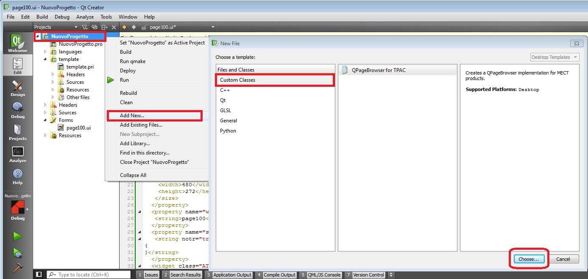
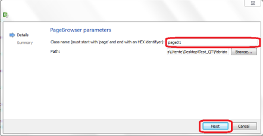
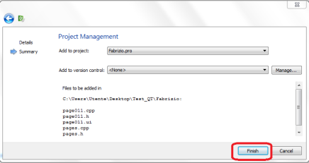
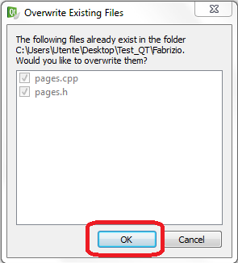

To add a new empty page on which add the interface elements proceed as follows:
Switch to “Edit” mode (left column);
Click with right mouse key on the project name (on top);
Select “Add New”;

Press “Choose”;
Choose page name and press “Next”;
NOTE: remember that the page name must be page<page number> (page101).
In the window “Project Management” click on “finish”;
|
 |
 |
|
Confirm overwrite file “pages.cpp” e “pages.h”.

From page 2 on it is necessary to confirm (pressing “yes to all”) reloading file “pages.cpp” e “pages.h”.
To open a created page double click on relevant file in the “Forms” tree of the project.